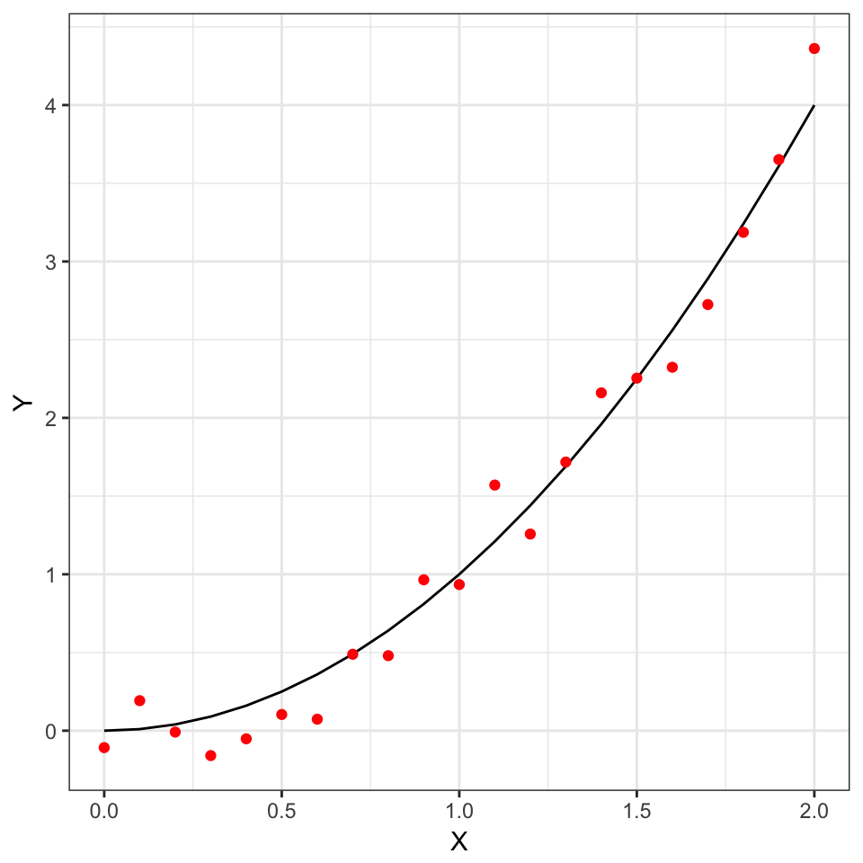
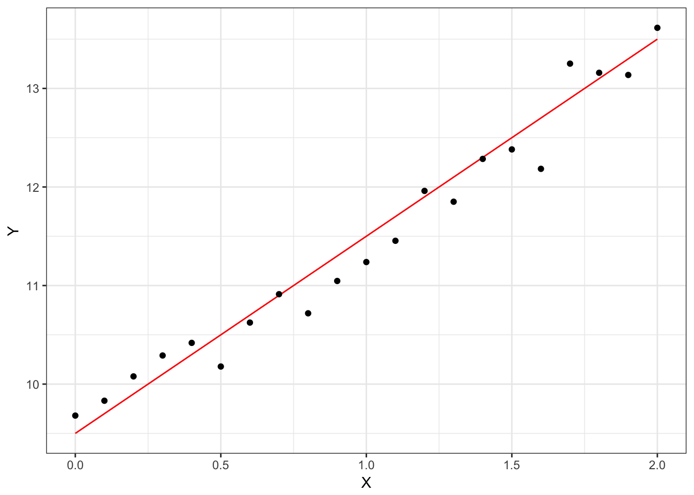

1.3 Relationships between variables
There are two type of relationships underlying regression analysis. They are (1) functional relationship and (2) statistical relationship. Suppose, for simplicity, that \(Y\) and \(X\) are two real-valued variables. Then functional relationships between \(Y\) and \(X\) are represented as
\[\begin{equation*} Y = f(X) \end{equation*}\]for some function \(f\).
For example, \[\begin{equation*} Y = 2X; \qquad Y = X^2; \qquad Y = \sin(2 \pi X) \end{equation*}\] are all functional relationships. Similarly, if \(Y, X_1, X_2, \dots, X_m\) are real-valued variables, then \[\begin{equation*} Y = \sqrt{X_1^{2} + X_{2}^{2} + \cdots + X_m^{2}}, \qquad Y = X_1 + \frac{X_2}{2} + \frac{X_3}{3} + \cdots \frac{X_m}{m} \end{equation*}\]are functional relationships.
Functional relationships are exact. However, as regression analysis is a statistical procedure, using only functional relationships is cumbersome/inadequate to represent relationships between the variables.
For example, size of vocabulary of a child depends on the age of the child, education levels of the parents. But it is highly likely that the size of the vocabulary also depends on other factors, such as school attended, personality of the child, multilingual household/neighborhood, time/place of assessment and sleeping pattern. Thus, a relationship between size of vocabulary and age of child and education levels of parents will be inexact and subjected to statistical errors.
A notional description of a statistical relationship of the form \(Y = f(X) + \color{red}{\epsilon}\) where \(f(X)\) describes a functional relationship and \(\color{red}{\epsilon}\) is a statistical error, e.g., a random variable. The function \(f\) describes the trend, i.e., the tendency of the changes in \(Y\) as \(X\) changes while \(\epsilon\) describes the deviation from that trend.

1.3.1 Regression models
A regression model is a formal description of expressing the (statistical) relationship between a set of explanatory or predictor variables and a response variable. There is the trend component (expressed by \(f\)) and a statistical component (expressed by the \(\epsilon\)). That is
- There is a (conditional) probability distribution \(\mathbb{P}(Y | X)\) of \(Y\) for each given value of \(X\).
- The conditional mean \(\mathbb{E}[Y | X]\) varies systematically with \(X\).
General issues in regression model/analysis include
- The number of and choice of explanatory or predictor variables.
- Form of trend/functional relationship \(f\), e.g., linear, piecewise linear, quadratic, polynomials.
- Type/model for the error term/statistical deviation \(\epsilon\).
- Scope of model.
- Causality and association in interpreting regression analysis. That is, regression analysis might indicate the presence/form of relationships between variables, but does not necessarily indicate a cause-and-effect relationship among the variables.
1.3.2 The simple regression model
Consider the following model \[\begin{equation} Y = \beta_0 + \beta_1 X + \epsilon. \tag{1.1} \end{equation}\]This a regression model with a single predictor variable \(X\). The trend relationship between \(X\) and \(Y\) is linear/affine. For \(n\) trials, i.e., \(n\) observations \((X_1, Y_1), (X_2, Y_2), \dots, (X_n, Y_n)\) the above model correspond to
\[ Y_i = \beta_0 + \beta_1 X_i + \epsilon_i, \quad i=1,2,\dots,n.\]
The statistical deviation \(\epsilon_i\) are assumed to have zero mean, variance \(\sigma^2\) and are uncorrelated. That is \[\mathbb{E}[\epsilon_i] = 0, \quad \mathrm{Var}[\epsilon_i] = \sigma^2, \quad i=1,2,\dots,n; \quad \mathbb{E}[\epsilon_i \epsilon_j] = 0 \quad \text{for all $i \not = j$}.\] The \(\beta_0\) and \(\beta_1\) are termed regression coefficients.
For example, consider the model \(Y = 9.5 + 2X + \epsilon\) with \(\epsilon\) having mean \(0\) and variance \(0.2\).

Some important features of the simple linear regression model are
- The \(Y_i\) are random variables.
- \(\mathbb{E}[Y_i] = \beta_0 + \beta_1 X_i\) and \(\mathrm{Var}[Y_i] = \sigma^2\).
- The responses \(Y_i\) and \(Y_j\) are uncorrelated whenever \(i \not = j\).
- The model can be reparameterized. For example, if \(c\) is any constant, then \[\begin{equation*} Y_i = \beta_0 + \beta_1 X_i + \epsilon_i = (\beta_0 + c \beta_1) + \beta_1 (X_i - c) + \epsilon_i. \end{equation*}\]
1.3.3 More general linear regression models
As an aside (and a pre-cursor of what to come later), suppose now that \(X_1, X_2, \dots, X_{K}\) are predictor variables and \(Y\) is a response variable. Then
\[\begin{equation*} Y = \beta_0 + \beta_1 X_1 + \beta_2 X_2 + \cdots + \beta_K X_{K} \end{equation*}\]is a linear regression model. This is a general (multivariate) regression model. Similarly
\[\begin{equation*} Y = \beta_1 X_1 + \beta_2 X_1^{2} + \beta_{3} \tanh{X_2} + \beta_{4} X_3 X_{K} + \beta_{5} e^{X_4 X_5} + \beta_{6} \log{X_5} + \epsilon \end{equation*}\] is also a linear regression model. Similarly \[\begin{equation*} \log{Y} = \beta_1 X_1 + \beta_2 X_1^{2} + \beta_{3} \tanh{X_2} + \beta_{4} X_3 X_{K} + \beta_{5} e^{X_4 X_5} + \beta_{6} \log{X_5} + \epsilon \end{equation*}\] is also a linear regression model. In general, if \(f\) is a function and \(g_1, g_2, \dots, g_m\) are (multivariate) functions then \[\begin{equation*} f(Y) = \sum_{i}\beta_i g_i(X_1, \dots, X_K) + \epsilon \end{equation*}\]is a linear regression model.
1.3.4 Data for regression model
Suppose \((X_1,Y_1), (X_2, Y_2), \dots, (X_n, Y_n)\) are given and a simple linear regression model \(Y_i = \beta_0 + \beta_1 X_i + \epsilon\) is posited. A goal of regression analysis might be to estimate the \(\beta_0\) and \(\beta_1\) along with characteristics of \(\epsilon_i\) such as its mean and variance.
But before that, some distinction can be made regarding the source of the \((X_i,Y_i)\). The \((X_i, Y_i)\) could come from (1) observational data or (2) experimental data.
Observational data arise from non-experimental studies and these studies do not control the explanatory/predictor variables of interest. A limitation of observation data might be that they do not provide adequate information to infer causal relationships among the predictor and response variables.
Experimental data come from experimental studies and thus provide control over the predictor variables. If the experimental studies are well-designed, then it is possible to infer causality between predictor and response variables using experimental data. Well-designed experimental studies are usually properly randomized.
As an example, the Lanarkshire milk experiment is an experiment carried out in 1930 in the schools of Lanarkshire that attempted to ascertain the effect of milk supplements on Scottish children. For four months, 5000 children received 3/4 pints of pasteurized milk, 5000 children received 3/4 pints of non-pasteurized milk and 10000 children received no milk. Each child was weighed and measured for height before and after the experiment. The final observations of the control group (the children not receiving any milk) exceeded the final observations of the treatment groups by average amount equivalent to 3 months in weight and height, thus suggesting that the milk supplements has detrimental effects to growth.
1.3.5 Steps in regression analysis
A notional workflow when performing regression analysis is
- Exploratory data analysis
- Develop tentative models
- Evaluate candidate models
- If the candidate models are appropriate proceed to identify suitable model(s) and perform inference
- If the canddiate models are not appropriate, go back and revise/develop other tentative models.
- Perform inference using the selected model(s).